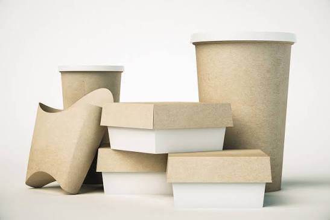
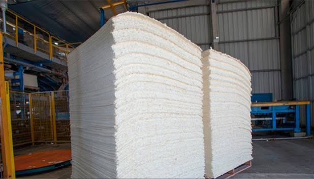
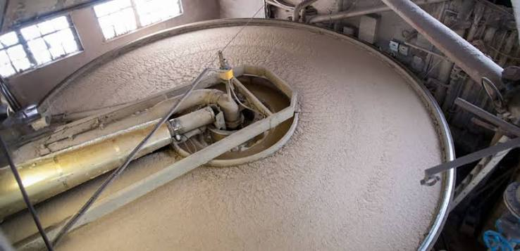
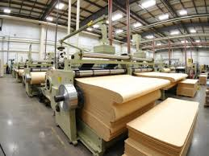

Materiais de papel
Segmento que abrange pastas celulósicas, papel, cartolina e papel-cartão.
01Atuação no segmento de produtos de pastas celulósicas, papel, cartolina, papel-cartão e papelão ondulado, com foco em organização, cuidado e atenção a cada etapa.

01 / QUEM SOMOS
A 69.112.269 Lucas Davi Silva da Silva atua no segmento de fabricação de produtos de pastas celulósicas, papel, cartolina, papel-cartão e papelão ondulado não especificados anteriormente.
Com sede em São José de Ribamar, no Maranhão, a empresa busca apresentar com clareza sua atividade e facilitar o contato com pessoas e organizações interessadas em conhecer sua atuação.
Saiba mais sobre a empresaSegmento que abrange pastas celulósicas, papel, cartolina e papel-cartão.
01Categoria de material reconhecida por suas aplicações em acondicionamento e embalagem.
02Empresa localizada em São José de Ribamar, estado do Maranhão.
03
02 / ÁREAS DE ATUAÇÃO
Conheça algumas das categorias relacionadas à atividade econômica registrada da empresa.
Materiais com diferentes características físicas e possibilidades de uso.
01Material empregado em diversas soluções de apresentação e acondicionamento.
02Uma categoria de papel com estrutura ondulada associada a aplicações de embalagem.
03Matéria-prima relevante na cadeia produtiva de diferentes tipos de papel.
04As categorias acima descrevem o segmento econômico. Consulte a empresa para confirmar disponibilidade, produtos específicos, condições comerciais e atendimento.
03 / NOSSA ATIVIDADE
O setor de papel e derivados reúne etapas e equipamentos específicos para preparar, transformar e dar forma aos materiais. A imagem abaixo ilustra um ambiente industrial do segmento.

Imagem ilustrativa do setor industrial de pastas e papel.

04 / NOSSO COMPROMISSO
Este espaço foi criado para apresentar a empresa, sua atividade econômica e seus canais de contato de maneira objetiva. Antes de solicitar orçamento ou contratar um serviço, recomendamos confirmar diretamente os detalhes de cada produto ou operação.
05 / FALE CONOSCO
Entre em contato para obter informações sobre a empresa e sua atividade.